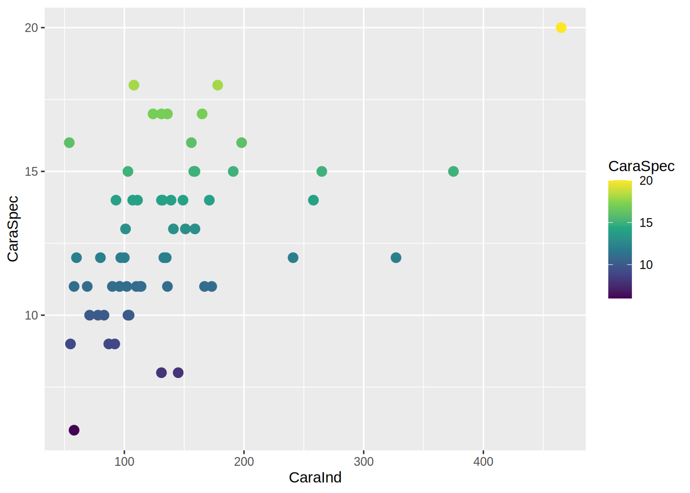
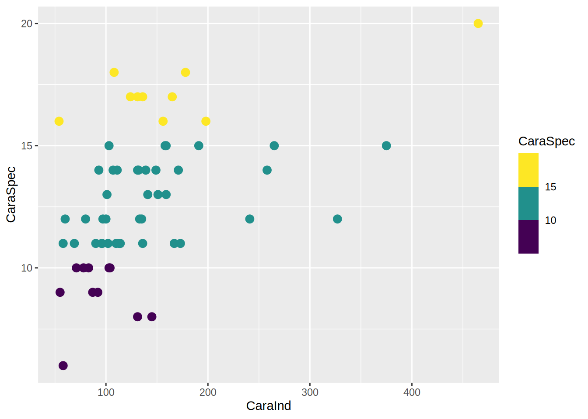

colors()Colors
Color is one of the most important thing to consider when working with plots.
Dealing with colors in R can be a bit tricky. There are numerous packages that attempt to make it easier, however, each one works a bit different. At the core, colors can be either defined by their name or by their RGB “value”:
You can get the name of the 657 predefined colors by calling the colors() function.
Here is a little function that shows a random color.
colorsample = function(){
random_color = sample(colors(), 1)
ggplot()+
labs(title = random_color)+
theme(panel.background = element_rect(fill = random_color))
}
colorsample()The second option for colors is using the additive color model. Here we define the amount of red, green and blue (and optionally alpha i.e. transparency) each with two digit hexadecimal numbers.
Hexadecimal numbers
are base 16 numbers. We have 16 options for each digit instead of the usual 10. The symbols we use for these 16 options are 0, 1, 2, 3, 4, 5, 6, 7, 8, 9, A, B, C, D, E, F. So FF is the highest possible two digit hexadecimal number corresponding to 255 in base 10.

library(ggplot2)
df = read.csv("data/crop_species.csv")
ggplot(df, aes(x = CaraInd, y = CaraSpec))+
geom_point(color = "firebrick")+
theme(panel.background = element_rect(fill = "#50FFFF50"))Color Scales
Color scales are usually just defined as a series of colors.
library(viridis)
viridis(5)[1] "#440154FF" "#3B528BFF" "#21908CFF" "#5DC863FF" "#FDE725FF"Code
ggplot(data.frame(x = seq(5), y = 1), aes(x, y, fill = x))+
geom_raster()+
scale_fill_gradientn(colors = viridis(5), guide = "none")+
scale_x_continuous(labels = viridis(5), breaks = seq(5), name = NULL, expand = c(0,0))+
scale_y_continuous(name = NULL, breaks = NULL, expand = c(0,0))+
theme(axis.text.x = element_text(size = 12, color = "black"))Continuous, Discrete, Binned, Diverging …
Depending on the data you want to visualize, different colorscale types are needed for adequate plots. Here, I go over some examples of commonly used colorscales and options:
Continuous scales
… are for continuous data, i.e. numeric values like the amount of Species. Here I use scale_color_viridis_c(), the c stands for continuous.
ggplot(df, aes(x = CaraInd, y = CaraSpec, color = CaraSpec))+
geom_point(size = 3)+
scale_color_viridis_c()
Binned scales
… groups numeric values together into bins instead of following a gradient:
ggplot(df, aes(x = CaraInd, y = CaraSpec, color = CaraSpec))+
geom_point(size = 3)+
scale_color_viridis_b()
Discrete scales
… do not work with continuous, i.e. numeric data, but need discrete values like the croptype:
ggplot(df, aes(x = CaraInd, y = CaraSpec, color = Croptype))+
geom_point(size = 3)+
scale_color_viridis_d()Diverging scales
… are similar to continuous scales, but have a neutral value from which colors diverge. A common example is a anomaly or error that can go in either a positive or negative direction. In order to get easy access to diverging scales, I use the colorspace package here.
library(colorspace)
df$AraAnomanly = df$AraInd - mean(df$AraInd)
ggplot(df, aes(x = plotcode, y = AraAnomanly, color = AraAnomanly))+
geom_point(size = 3)+
colorspace::scale_color_continuous_diverging()+
theme_light()